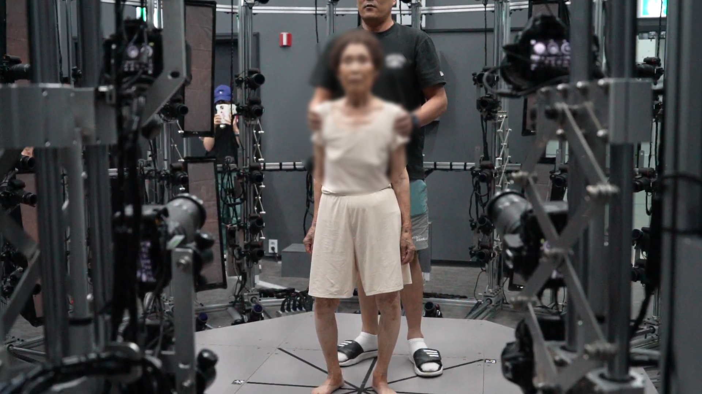
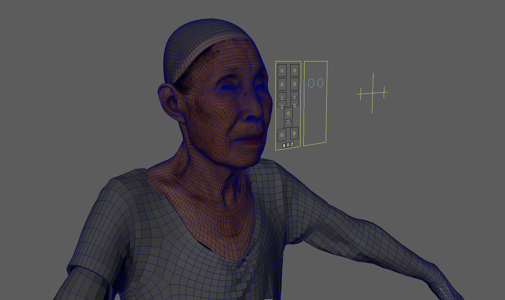
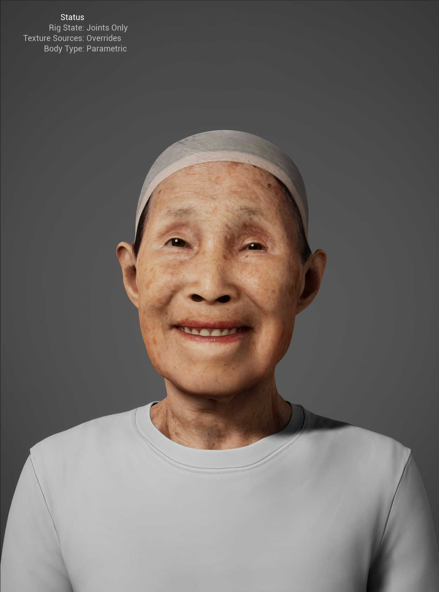
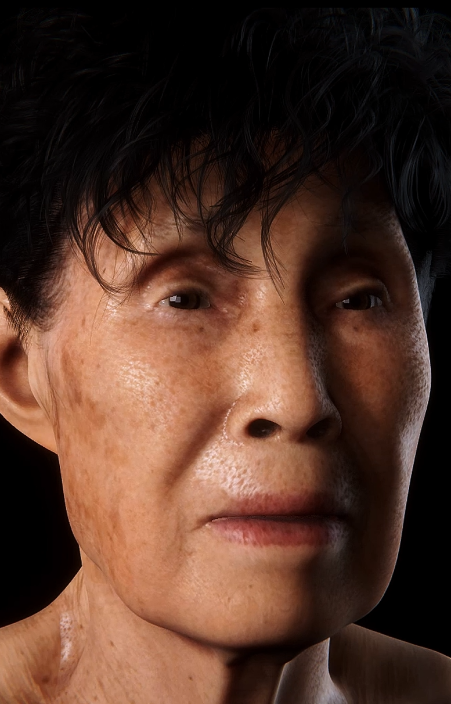

1. Volumetric Capture
Full-body 4K textured scan captured in a volumetric studio with synchronized cameras recording geometry and albedo information.
Shininho – Digital Human
Shin Inho is a digital human reconstruction project that revives media artist Yaloo’s grandmother through volumetric scanning and AI-generated animation. Using full-body captures, rigging, and emotional gesture synthesis, the project transforms memory into a living digital archive.
The work explores how affection, grief, and presence can be translated into computational form. Subtle gestures such as breathing, blinking, and head tilts were algorithmically generated to simulate traces of life that no longer exist in the physical world.
Conceptual Framework
This project investigates the boundary between technological preservation and emotional authenticity. Instead of treating digital resurrection as mere replication, it frames it as a form of emotional continuity.
The work asks whether data can remember affection, whether presence can be simulated without imitation, and how grief transforms in the era of algorithmic memory.
Technical Methodology


2. Auto-Rigging & Facial Setup
The model was auto-rigged, refined manually in Maya, and integrated with 64 ARKit-compatible blendshapes using Faceit for expressive animation.

3. Material & Shader Refinement
Textures were cleaned in Photoshop and Substance Painter. Unity shaders simulated organic translucency and subsurface scattering.


4. Real-Time Rendering
The reconstructed model was rendered live in Unity and Unreal Engine 5, generating emotional gestures from an AI-driven motion dataset.
Artistic & Research Focus
Shin Inho reframes remembrance as a collaboration between human memory and machine learning. The work proposes that digital memory is not static but interactive, evolving, and affective.
It explores how grief, love, and presence are re-negotiated through technology and how digital humans reveal the boundary between simulation and emotional truth.
Collaborating with Yaloo @yalooreality